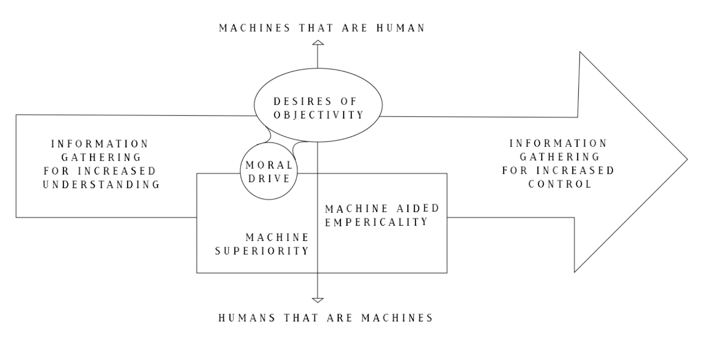
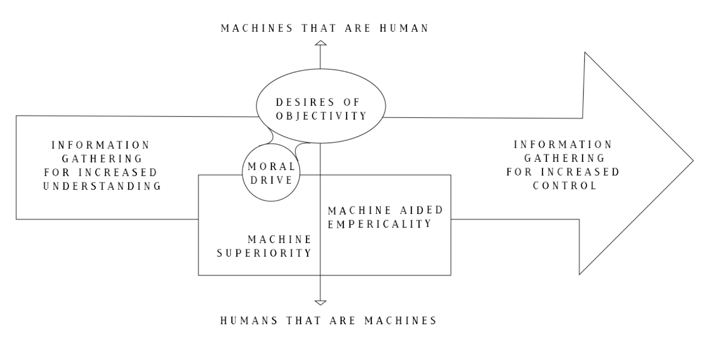

Humility Based Design Checklist
This list is simultaneously non-exhaustive and contextual. If you are someone who intends to either create or engage with humility-based technology, utilize this list and supplementary information below to assess a given product, and whether or not it checks off enough boxes for you, or if it checks off the boxes that matter the most to you.